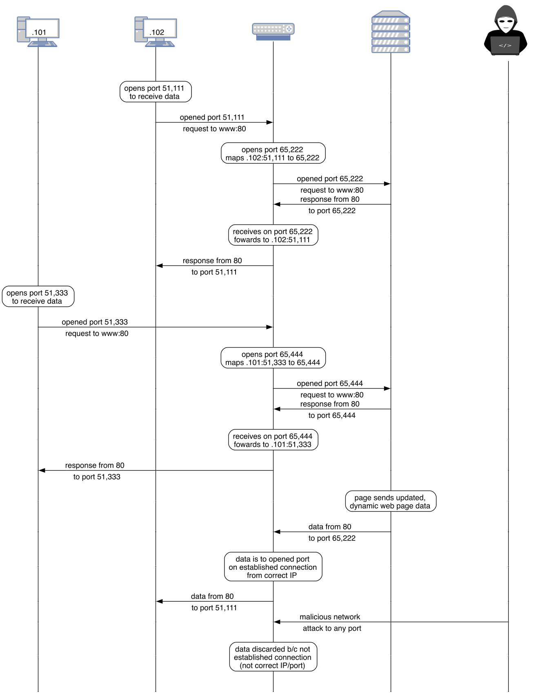

# Contents [Network Address Translation](#/nat) [Firewalls](#/firewallss)
# Network Address Translation
## Network Address Translation - Allows one IP address to be shared by many devices - Devices behind the NAT have private IPs - Technically, a NAT is on the network level - Doesn't have to come with a firewall, but almost always does - If it's a firewall, it is also on the transport level <a href='https://commons.wikimedia.org/wiki/File:NAT_Concept-en.svg'><img src='https://upload.wikimedia.org/wikipedia/commons/c/c7/NAT_Concept-en.svg' style='height:300px'></a> <a href='images/graphs/nat.webp'></a>
# Firewalls
## Firewall types: packet filter  - Each packet is judged individually based on the packet headers - Does not keep *state* (part of a stream, from an open connection, etc.) - Called a *stateless* firewall - Very fast, very simple <h2 class="r-fit-text">Firewall types: stateful firewall</h2>  - Keeps state (open connections, app type by port, etc.) - New packets are kept until enough are known to make a decision - Outbound: allow any traffic - Inbound: allow only existing connections <h2 class="r-fit-text">Firewall types: application/proxy firewall</h2>  - Unlike the previous two, this inspects the application data - Thus, much slower - Connection terminates at the firewall, and is re-opened to the server - This is different than NAT - Example: image or package proxy server ## Implementing a firewall  - Firewalls require kernel modules - The Linux kernel has *hooks*, and a kernel module can register a callback function for each hook - That function can modify, discard, etc., each packet ## iptables [](https://commons.wikimedia.org/wiki/File:Iptables_diagram.png) - Three *tables*, each with *chains*, each chain has rules: - filter: packet filtering - nat: NAT - mangle: modifying packets (beyond just NAT) ## Firewall policies - Accepted: allowed through - Denied: packet dropped - Rejected: packet dropped, and the source told A rejected rule will notify fuzzers that something "interesting" is on that port; unless you have a reason, use deny instead <!-- .slide: class="small-pre wide-pre" --> ``` $ iptables --list Chain INPUT (policy ACCEPT) target prot opt source destination Chain FORWARD (policy DROP) target prot opt source destination DOCKER-USER all -- anywhere anywhere DOCKER-ISOLATION-STAGE-1 all -- anywhere anywhere ACCEPT all -- anywhere anywhere ctstate RELATED,ESTABLISHED DOCKER all -- anywhere anywhere ACCEPT all -- anywhere anywhere ACCEPT all -- anywhere anywhere Chain OUTPUT (policy ACCEPT) target prot opt source destination Chain DOCKER (1 references) target prot opt source destination Chain DOCKER-ISOLATION-STAGE-1 (1 references) target prot opt source destination DOCKER-ISOLATION-STAGE-2 all -- anywhere anywhere RETURN all -- anywhere anywhere Chain DOCKER-ISOLATION-STAGE-2 (1 references) target prot opt source destination DROP all -- anywhere anywhere RETURN all -- anywhere anywhere Chain DOCKER-USER (1 references) target prot opt source destination RETURN all -- anywhere anywhere $ ``` <!-- .slide: class="small-pre wide-pre" --> ``` $ iptables --list-rules -P INPUT ACCEPT -P FORWARD DROP -P OUTPUT ACCEPT -N DOCKER -N DOCKER-ISOLATION-STAGE-1 -N DOCKER-ISOLATION-STAGE-2 -N DOCKER-USER -A FORWARD -j DOCKER-USER -A FORWARD -j DOCKER-ISOLATION-STAGE-1 -A FORWARD -o docker0 -m conntrack --ctstate RELATED,ESTABLISHED -j ACCEPT -A FORWARD -o docker0 -j DOCKER -A FORWARD -i docker0 ! -o docker0 -j ACCEPT -A FORWARD -i docker0 -o docker0 -j ACCEPT -A DOCKER-ISOLATION-STAGE-1 -i docker0 ! -o docker0 -j DOCKER-ISOLATION-STAGE-2 -A DOCKER-ISOLATION-STAGE-1 -j RETURN -A DOCKER-ISOLATION-STAGE-2 -o docker0 -j DROP -A DOCKER-ISOLATION-STAGE-2 -j RETURN -A DOCKER-USER -j RETURN $ ```